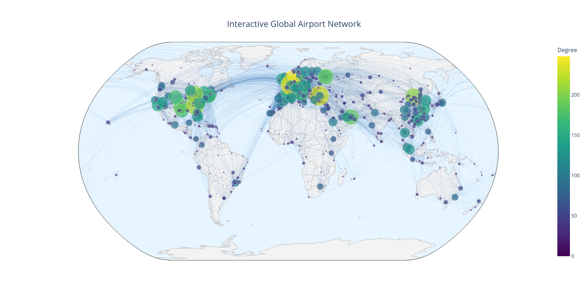
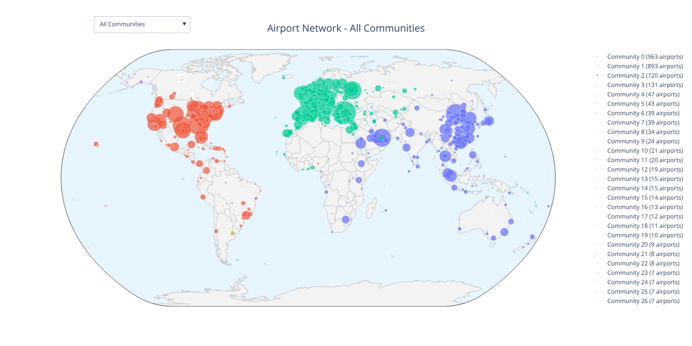

Exploring the World's Airport Network
This project analyzes the global airport network and air routes as a complex network system, treating connections between airports as undirected edges regardless of flight direction. The analysis focuses on network topology, community structures, and connectivity patterns within the largest connected component of the global aviation network.
Interactive Visualizations

Complete Airport Network
Interactive visualization of the entire global airport network, showing all airports and their connections. Explore the full topology of international air routes and identify key aviation hubs worldwide.

Network Communities
Discover the community structure within the airport network. This visualization reveals distinct regional clusters and geographical groupings based on connectivity patterns using advanced community detection algorithms.
About the Project
This research project investigates the global airport network as a complex system, applying graph theory and network science methodologies to understand the structure and organization of worldwide air transportation.
The network is modeled as an undirected graph where nodes represent airports and edges represent the existence of at least one air route between two airports, regardless of direction. This approach allows us to focus on the fundamental connectivity structure of the aviation network.
- Analysis of the largest connected component of the global network
- Community detection to identify regional clusters
- Topological metrics including degree distribution and centrality measures
- Geographical visualization of network properties
- Interactive tools for exploring network structure
The visualizations provided on this website allow researchers and aviation enthusiasts to interact with the data, explore connectivity patterns, and gain insights into the complex structure of global air transportation. The data has been extracted from OpenFlights.
Contact & Research Information
Iker Lomas Javaloyes
Institute for Cross-Disciplinary Physics and Complex Systems
UIB-CSIC
Palma de Mallorca, Spain